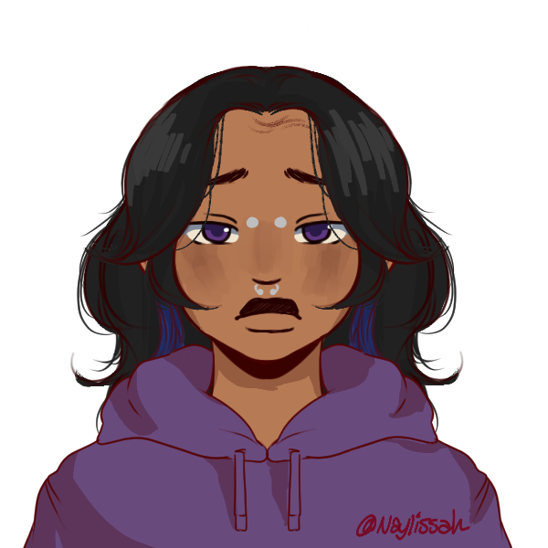

Nas Profundezas

Eu sinto… arrependimento.
Quanto mais eu penso em tudo o que foi deixado pra trás naquele acidente, quando lembro de nem ter tentado ajudar Agatha e que ela morreu sem eu sequer chegar a contar para ela como eu me sinto… eu só tenho certeza de que sou fraco. Se eu tenho um desejo nessa nova chance de vida que eu ganhei, é fazer valer a pena ter levantado daqueles escombros.
E eu… eu… chega. Eu não quero mais conversar.
Mar atende apenas por pronomes masculinos, normalmente Mar se mantém calado e não gosta muito de interações externas.
Lua e Mar não se gostam muito devido a suas conflitantes visões sobre o valor de sua vida. Porém ele se sente neutro quando se trata de Céu e nutre um enorme carinho por Sol, admirando de verdade a forma que ele se defende. A forma que defende a todos eles.